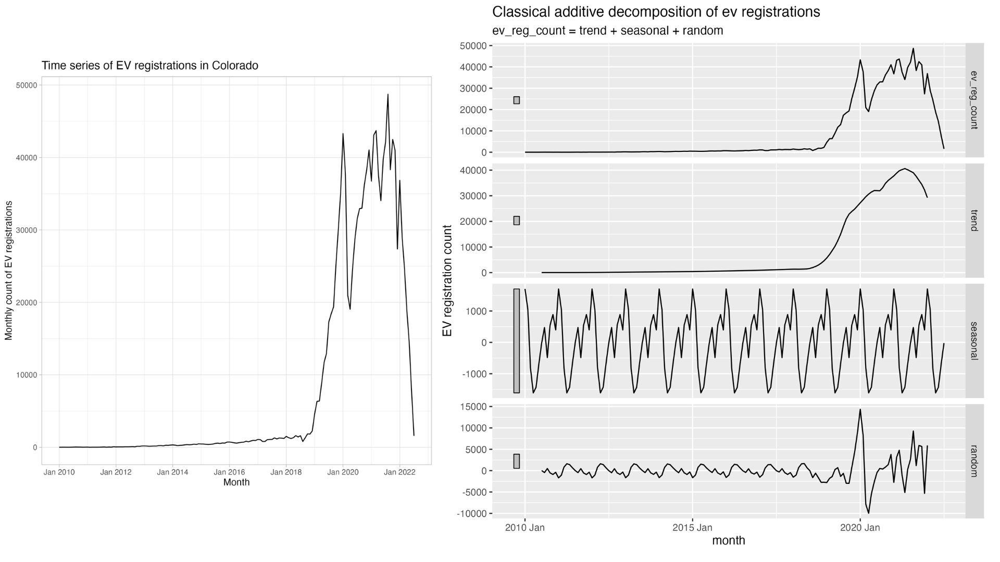
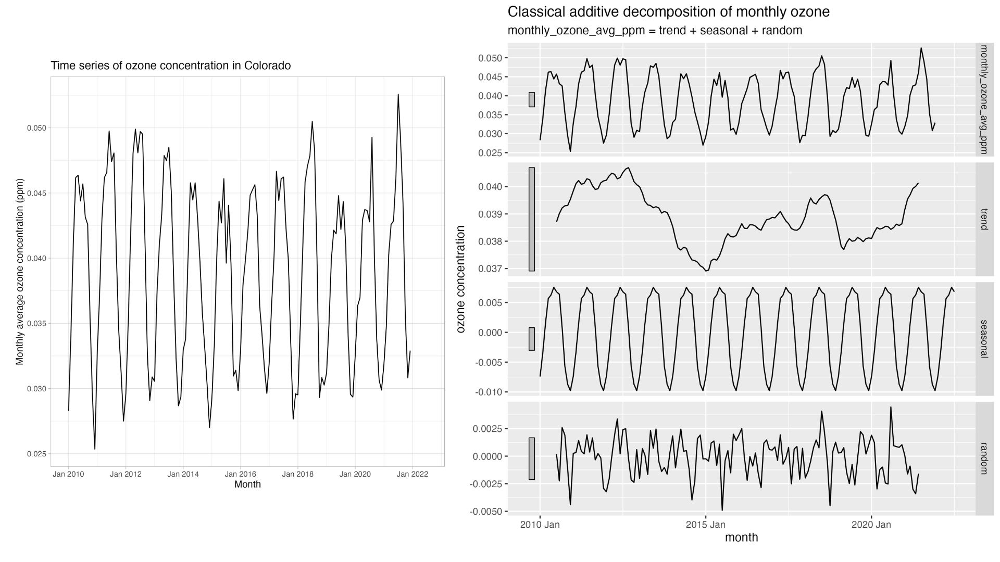
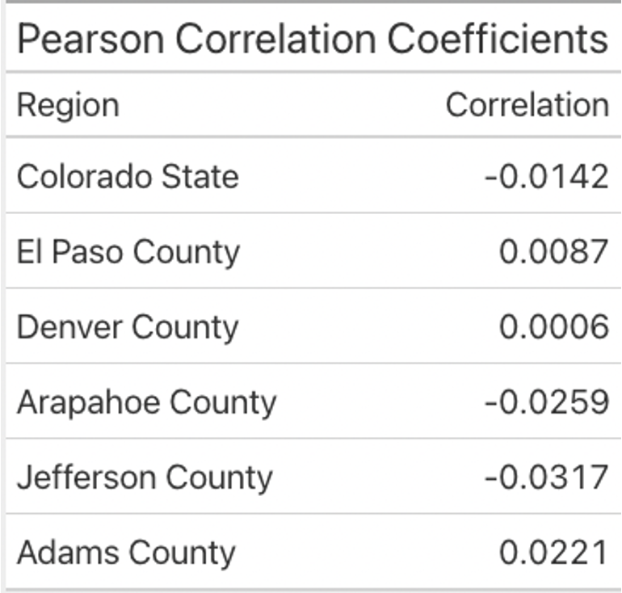
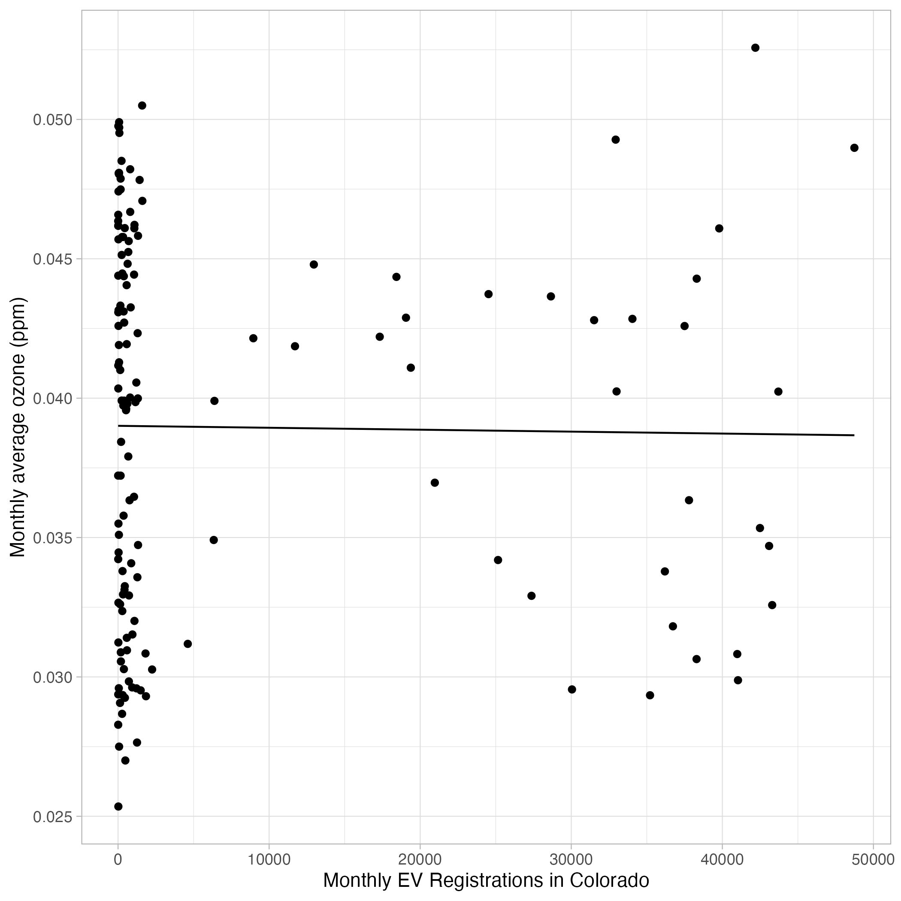

Are the increased number of electric vehicles on the road reducing ozone pollution in Colorado? Using the skills I learned in Statistics for Environmental Data Science, a course offered through the Bren School of Environmental Science and Management, I set out to analyze the relationship between EV adoption and ground-level ozone pollution in Colorado.
Background
Despite its reputation as an adventure-loving, outdoorsy city, Denver has an air quality problem. Ground-level ozone pollution can turn an otherwise perfect day to be outside into one where its better to hunker down inside. People with asthma, emphysema, and other pre-existing respiratory issues are even more susceptible to symptoms and health complications caused by increased ozone concentrations. For context, the current EPA limit for ozone is 70 parts per billion (0.07 ppm)—a level that the Denver metro area frequently exceeds (Robbins 2022).
Unlike other common air pollutants like particulate matter or sulfur and nitrogen dioxides, ozone isn’t directly emitted from any human sources. Ground-level ozone (or tropospheric ozone, as opposed to stratospheric ozone) forms when primary pollutants like nitrous oxides (NOx) and volatile organic compounds (VOCs) react with sunlight to form ozone (“Ozone and Your Health” 2022). Because sunlight is a necessary part of this reaction, ground-level ozone pollution is worse in the summer than the winter.
Ozone pollution is primarily attributed to refueling gas-powered cars and trucks because these constituent pollutants are released into the atmosphere during refueling. The oil and gas industry in the state is also a major contributor(Jaffe 2021). In the article Charts that explain why it’s so hard to cut Colorado ozone, Michael Booth at The Colorado Sun discusses the challenges in battling ozone and the already high “background” ozone levels. Because EVs don’t require gasoline and don’t emit the ozone precursors that gas and diesel powered engines do, they’re a promising solution to local air quality. In fact, a 2010 study modeled the hypothetical effect of swapping out light duty vehicles for EVs and found that ozone concentrations were significantly decreased (Brinkman et al. 2010). But are these hypothetical effects already starting to play out?
Data
Tropospheric ozone concentration data is collected and made available as Pre-Generated Data Files by the Environmental Protection Agency. I downloaded csv files for the Daily Summary Data on ozone (44201) from 2010 through 2022.
As a proxy for the number of EVs on the road, I used EV registration from the Colorado Energy Office, available on the Atlas EV Hub’s State EV Registration Data page, supported by the Open Vehicle Registration Initiative. Colorado EV (including plug-in hybrids and fuel-cell vehicles) registration data was available in csv file with date and location information. According to Atlas, the EV registration data can be used as a snapshot in time for the number of EVs on the road because the data doesn’t distinguish between new registrations and renewals.
You can follow along with my analysis by downloading the data above and running the code stored in my github repository: https://github.com/erica-bishop/colorado-evs-airquality.
Both datasets were available on a daily time scale, but I chose to aggregate them by month to do a monthly analysis from 2010 through 2022. The coarser time resolution could help with a more robust analysis over time – I didn’t expect to see an immediate relationship between the day someone registers their EV and the ozone concentration that same day.
Analysis
After downloading the data described above, I cleaned, joined, and otherwise wrangled the data for analysis in R. The ultimate goal of my analysis was to model the relationship between ozone concentration (monthly average parts per million) and the number of electric vehicles registered in the State.
Because both ozone concentration and EV counts are changing differently over time – ozone being seasonal and EV registrations being a long term trend. To establish this intuition and quantify the time-component, I ran a classical additive decomposition on each variable of interest (Figure 1 and Figure 2).
Figure 1: Classical additive decomposition of electric vehicle registrations in Colorado.

Figure 2: Classical additive decomposition of monthly average ozone concentrations in Colorado

After establishing that the variables are changing differently over time, I plotted the monthly ozone concentration average and monthly EV registration counts against each other in a simple scatter plot to see what the distribution looked like visually over my entire dataset.
The distribution didn’t look promising, so I decided to focus on just the top five most populous counties in Colorado (which are also all counties in the Front Range, where ozone pollution is of particular concern). This smaller spatial scale didn’t lead to any clearer visual trends.
I calculated the Pearson correlation coefficients between EVs and ozone for the entire data set and for the subsets within each of the five largest counties. As you can see in Figure 3, there is no correlation.
Figure 3: Table of Pearson correlation coefficients between monthly EV registration counts and monthly average ozone concentration

Although I established that there was no correlation between my variables, I still created a model – knowing that the lack of correlation would mean that a linear model is essentially worthless. However, the model is a first step that can be iterated on and improved for future analysis. As shown in Figure 4, the relationship is modeled very weakly, with a minuscule slope coefficient and a p-vale of 0.86. The outputs are discouraging, but perhaps with more time and finer resolution data in an area with more EVs the same process could be used to find a relationship.
Figure 4: Fitting a linear model with no correlation between ev registrations ozone concentration in Colorado

Next steps
The lack of any outcome from my analysis was disappointing, though not surprising. Electric vehicles are still just 0.64% of original vehicle registrations in Colorado(“EVs in Colorado Dashboard,” n.d.). Therefore, my analysis was examining less than 1% of a small piece of the many factors that contribute to ozone pollution. Studies have already shown that electrification can improve local air quality, so the outcomes of my analysis should not be taken to negate the importance of EVs(Schnell et al. 2019).
Future analysis could be improved in several ways:
Focusing on a smaller spatial scale and using finer air quality data and more localized EV data that includes information on miles driven. Registration data is only a proxy for EVs on the road in my current analysis, and there’s no way to know when are where they are actually being driven.
Running this analysis in a region where there are already more EVs on the road, such as California.
Allowing more time to pass and EV adoption to increase – in the future when EVs are a more significant portion of cars on the road this analysis may uncover a relationship.
Although my analysis didn’t find a relationship between EVs and ozone pollution, the existing body of evidence suggests this is still a worthwhile investigation(Erickson et al. 2020).
References
Citation
@online{bishop2022,
author = {Erica Bishop},
title = {Electric {Vehicles} and {Ozone} {Pollution}},
date = {12/07/2022},
url = {https://erica-bishop.github.io/posts/2022-12-07-co-evs-ozone/},
langid = {en}
}